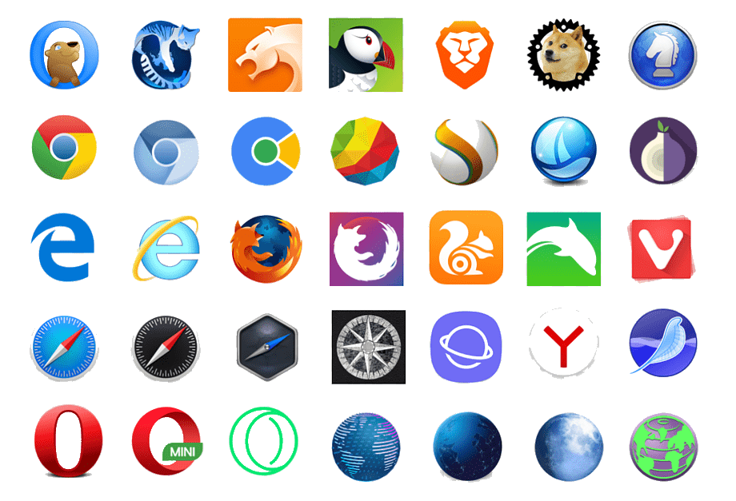

George Salt
Blog
JavaScript
7 минут
2023 г
JavaScript - это язык управления элементами на сайте. Он умеет красить кнопки, запускать анимации, загружать эффекты, и всё это — без перезагрузки страницы.
Программы на JavaScript называются скриптами. Они могут встраиваться в HTML и выполняться автоматически при загрузке веб-страницы. Скрипты распространяются и выполняются, как простой текст. Им не нужна специальная подготовка или компиляция для запуска. Это отличает JavaScript от другого языка – Java.
Современный JavaScript – это «безопасный» язык программирования. Он не предоставляет низкоуровневый доступ к памяти или процессору, потому что изначально был создан для браузеров, не требующих этого. В браузере для JavaScript доступно всё, что связано с манипулированием веб-страницами, взаимодействием с пользователем и веб-сервером.
1. Добавление нового HTML-кода на веб-страницу, изменять существующее содержимое, модифицировать стили элементов.
2. Ответное действие на действие пользователя, щелчок мыши, перемещение курсора мыши, нажатия клавиш на клавиатуре.
3. Отправка сетевых запросов, скачивание и загрузка файлов.
4. Итеграция с HTML и CSS.
5. Поддержка всеми браузерами.
1. Он не имеет прямого доступа к системным функциям операционной системы и файлам на жестком диске.
2. JavaScript с одной страницы не имеет доступа к другой, если данные пришли с разных сайтов (с другого домена, протокола или порта).